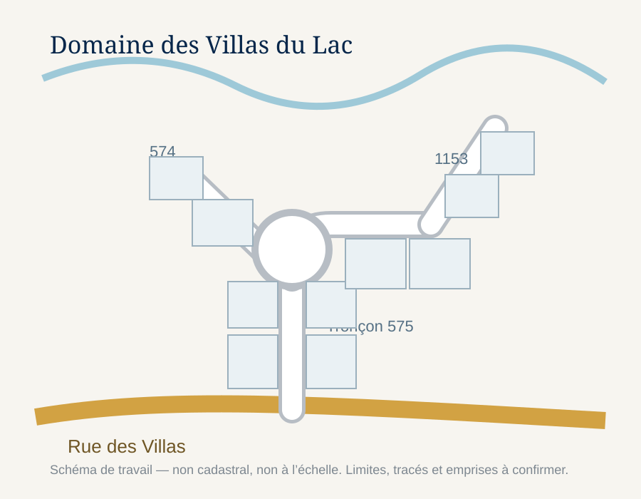

Terminer la rue
Le réseau complet compte environ 854 m. Environ 400 m seraient déjà construits; le chantier doit porter sur la portion non réalisée, et non sur tout le réseau.
Permis et conception à validerLongueur des tronçons principaux projetés au registre de travail.
Déclaration approximative à réconcilier avec un plan géoréférencé.
Mesure de travail communiquée pour les tronçons A et B, à vérifier.
Chiffrer seulement les 478 m
Hypothèses historiques de prix au mètre à remplacer par quantités et devis. Route présumée en gravier, sans aqueduc municipal, sans égout et sans asphalte.
| Hypothèse | Calcul | Coût direct illustratif | Avec 15 % de contingence |
|---|---|---|---|
| Bas | 478 m × 500 $/m | 239 000 $ | 274 850 $ |
| Central | 478 m × 800 $/m | 382 400 $ | 439 760 $ |
| Haut | 478 m × 1 100 $/m | 525 800 $ | 604 670 $ |
Ne sont pas inclus : ingénierie, levés, caractérisation, autorisations, taxes applicables, acquisition de droits, inspection, frais financiers, ni prix de mise aux normes d'un chemin existant s'il s'avère non conforme.
Ce qui manque
01 · Relever le tracé construit et le tracé restant
Plan de localisation, coupes, limites et emprises exactes; mesurer les accès déjà utilisables.
02 · Obtenir la position officielle de Sherbrooke
Confirmer validité de l'autorisation historique de Deauville, éventuelles dérogations, rue privée ou publique, normes et acceptabilité du gravier.
03 · Réaliser les vérifications environnementales
Milieux humides, cours d'eau, zone de grenouilles, drainage et contraintes de déboisement.
04 · Faire dessiner l'avant-projet civil
Profil longitudinal, structure granulaire MG-56 ou matériaux selon devis retenu, fossés, ponceaux, drainage et gestion de l'érosion.
05 · Faire soumissionner les travaux restants
Obtenir deux offres détaillées par poste plutôt qu'un simple prix au mètre.
06 · Fixer la répartition des coûts et les autorisations
Convention de quote-part, propriétaire de la voie, entretien futur, responsabilité et sûretés avant début des travaux.

Décision de construire
Elle doit suivre la validation écrite de la Ville, le plan d'implantation conforme et deux soumissions portant sur la portion non construite. Réviser ensuite le modèle financier avant tout engagement ferme.